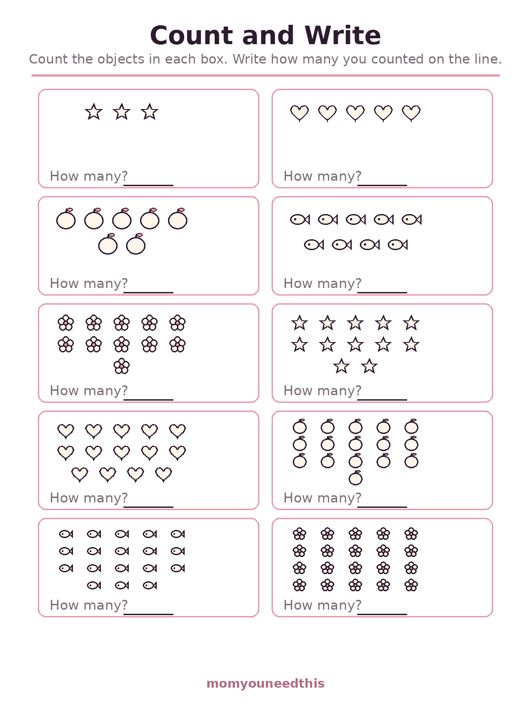
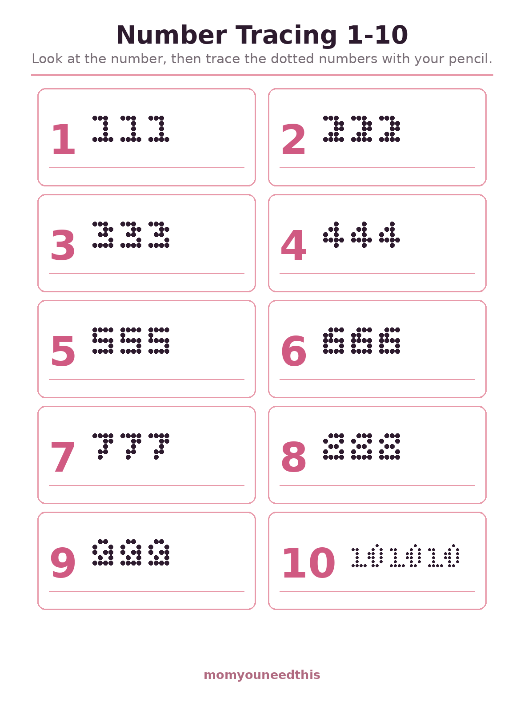
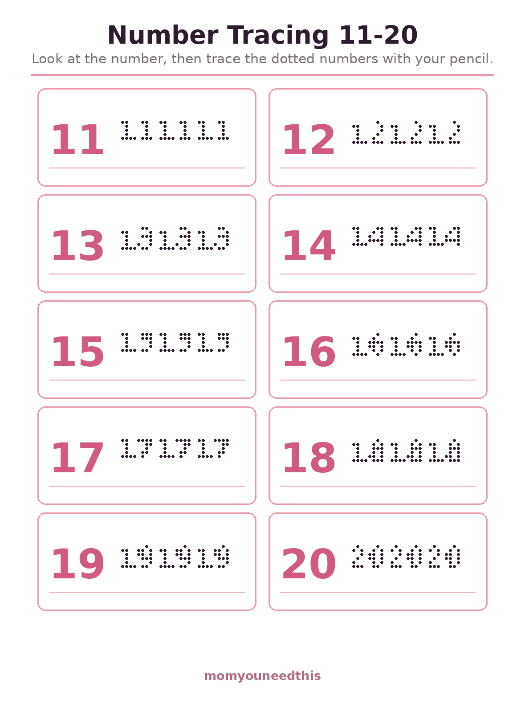
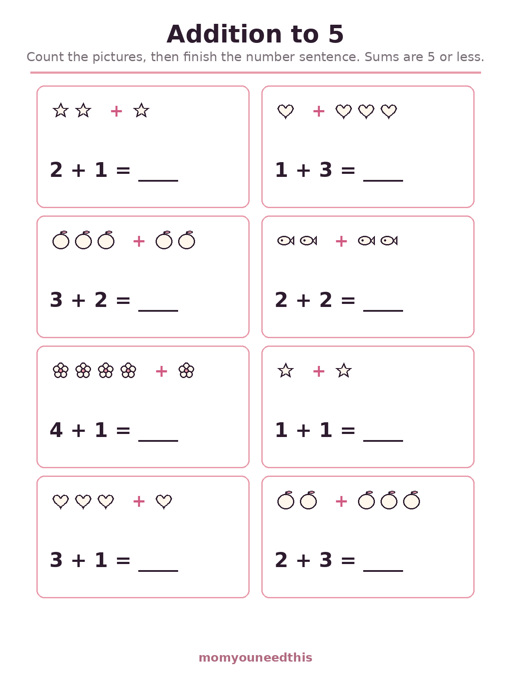
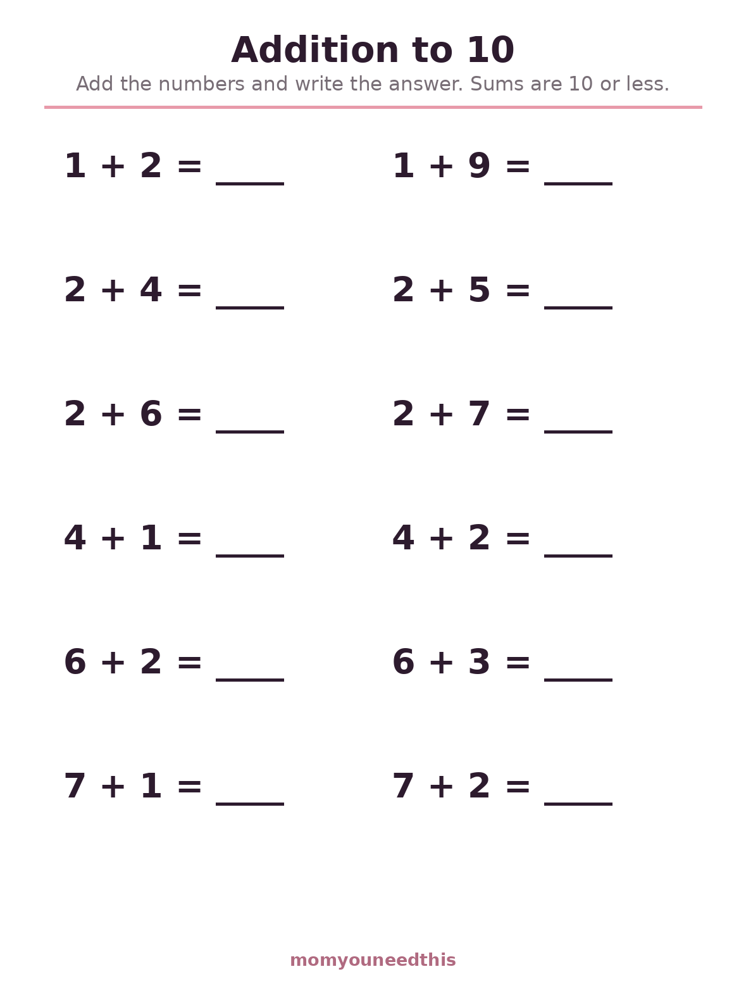
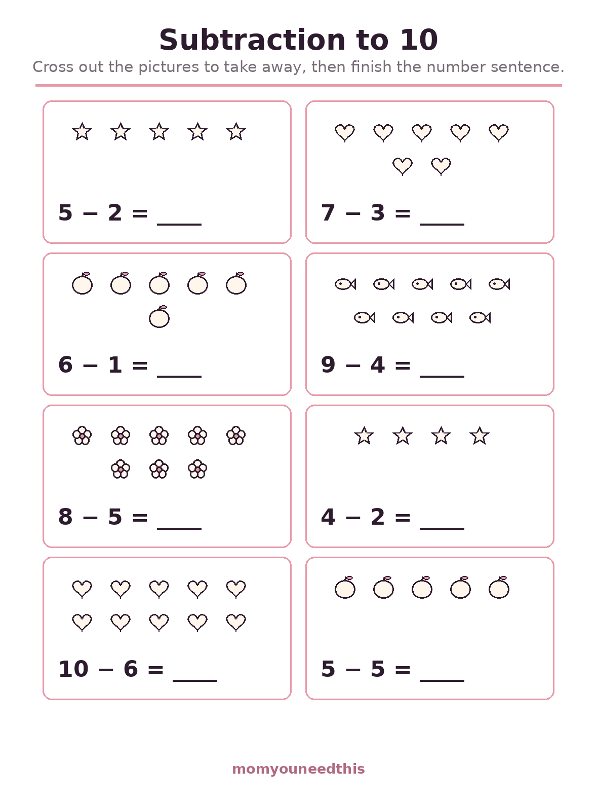
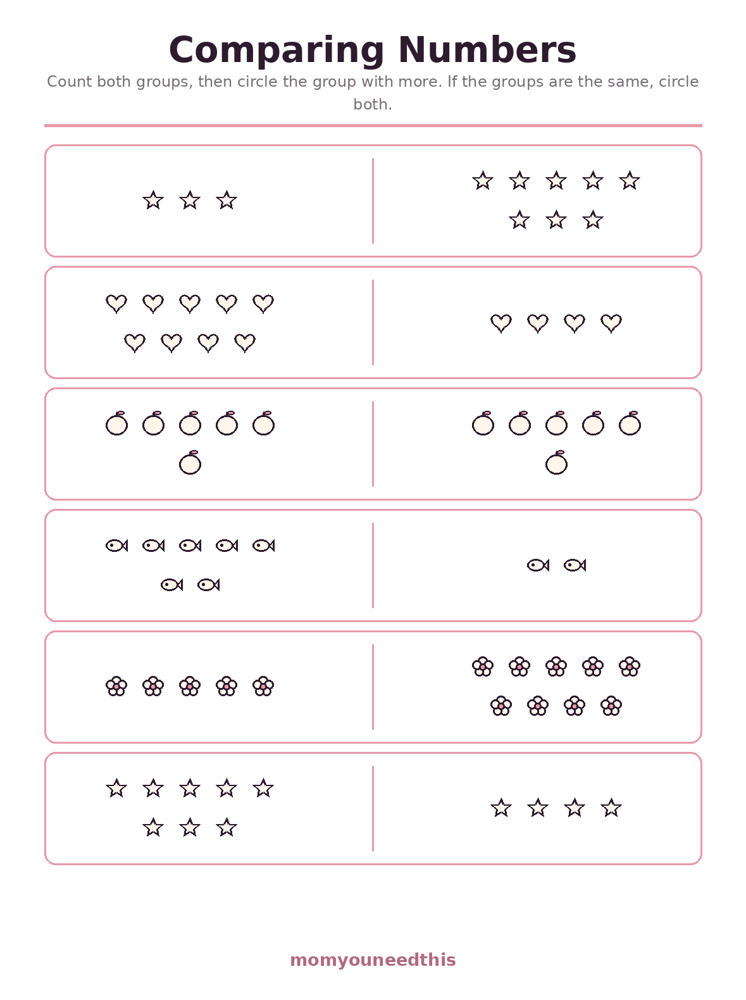
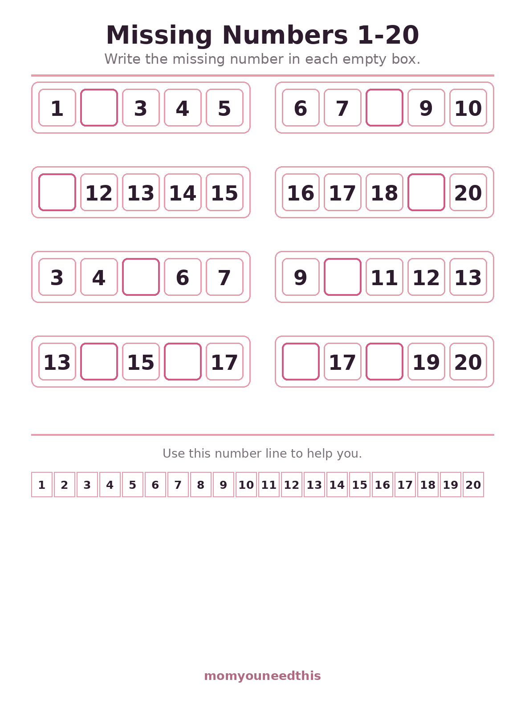
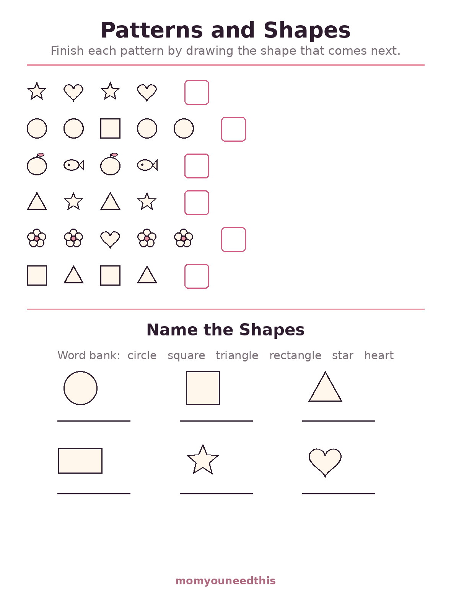
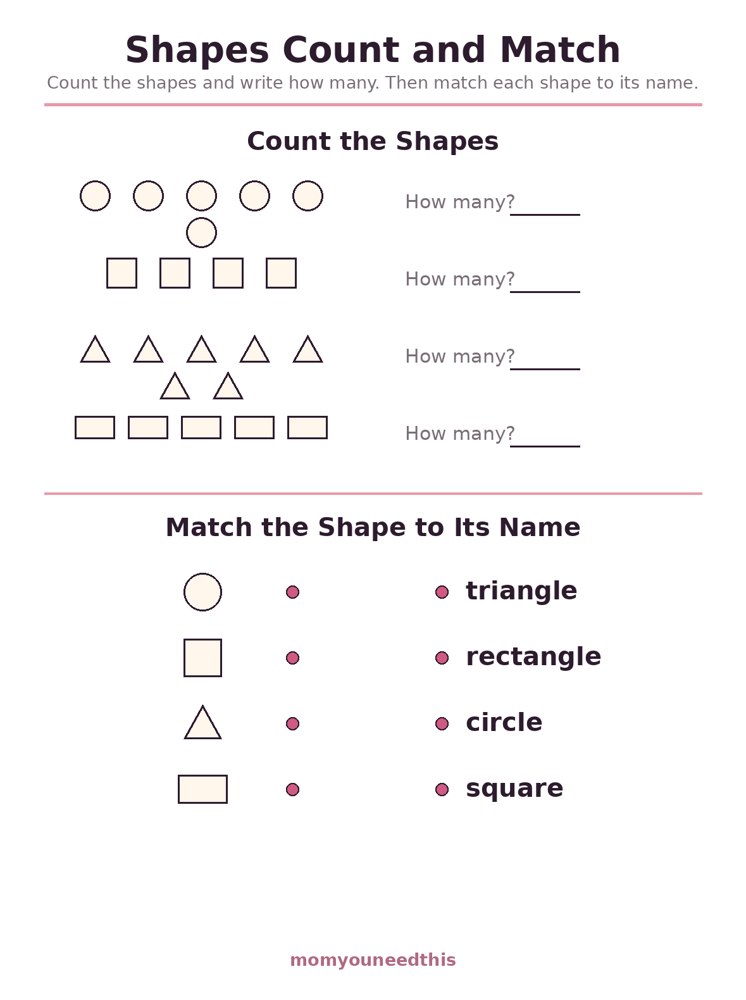

Kindergarten Math Worksheets Counting, Number Tracing, First Addition & Patterns
These free kindergarten math worksheets turn the big kindergarten skills into ten friendly sheets: counting and writing numbers to 20, tracing numerals 1 to 20, first addition with pictures, addition to 10, subtraction with pictures, comparing numbers, missing numbers, and patterns with shapes, plus a shapes count-and-match page. They are made for ages 4 to 6 — big numbers, lots of white space, nothing timed. Print one sheet at a time and settle in at the kitchen table; everything is free, with no signup.
Last updated: October 23, 2026
Quick Answer
Ten free kindergarten math worksheets cover the core kindergarten year: counting objects and writing numbers to 20, tracing the numerals 1 to 20 across two sheets, addition to 5 with pictures to count, addition to 10 in plain number sentences, subtraction to 10 with pictures to cross out, a comparing-numbers sheet, a missing-numbers sheet, a patterns-and-shapes sheet, and a shapes count-and-match sheet. Each one prints on a single page, with no answers shown, for ages 4 to 6.
At a Glance
- Ages: 4–6 (kindergarten)
- What you get: 10 worksheets — counting, tracing, addition with pictures, addition to 10, subtraction, comparing, missing numbers, patterns & shapes
- Skills: Counting to 20, writing numerals, addition and subtraction to 10, comparing numbers, missing numbers, patterns, shape names
- Answers: None printed — made to check together
- Cost: Free — no signup, no email
🔢 Count and Write to 20
Counting is the first real math skill, and this sheet practices it the kindergarten way: groups of objects to count one by one — stars, hearts, apples, fish and flowers — in groups from 3 up to 20. Your child touches each object, says its number out loud, then writes the total on the line. The biggest groups come last, building the careful one-by-one habit that all later math depends on.

🔢 Download Your Free Count and Write Worksheet
10 groups of objects to count, from 3 up to 20
⬇️ Download Free Worksheet 🖨️ Print🎁 Free printable for ages 4–6
✏️ Number Tracing 1 to 10
Before children can write numbers freely, their hands need to learn the shapes of the numerals. Each number from 1 to 10 appears once in solid pink as the model, then three times in dots to trace over. Tracing the same numeral three times in a row builds the muscle memory that makes writing 4s and 7s automatic later — and the sheet quietly doubles as a first handwriting lesson.

✏️ Download Your Free Number Tracing Worksheet
Numerals 1 to 10 in dots, three traces each
⬇️ Download Free Worksheet 🖨️ Print🎁 Free printable for ages 4–6
✏️ Number Tracing 11 to 20
The first tracing sheet stops at 10, but kindergarten numbers do not. This second sheet gives the teen numbers the same treatment: each numeral from 11 to 20 appears once in solid pink as the model, then three times in dots to trace. Two-digit numbers are where reversals sneak in — a 12 written as 21 — and tracing them slowly, one at a time, is how the order of the digits becomes automatic.

✏️ Download Your Free Number Tracing 11 to 20 Worksheet
Numerals 11 to 20 in dots, three traces each
⬇️ Download Free Worksheet 🖨️ Print🎁 Free printable for ages 4–6
➕ Addition to 5 — With Pictures
This is where addition stops being plain counting and starts being joining. Each problem shows two groups of pictures — two stars plus one star — with the number sentence underneath: 2 + 1 = ___. Your child counts the pictures, then connects what they counted to the symbols. All eight problems have sums of 5 or less, which makes this one of the gentlest kindergarten addition worksheets a child can start with.

➕ Download Your Free Addition to 5 Worksheet
8 picture problems, sums of 5 or less
⬇️ Download Free Worksheet 🖨️ Print🎁 Free printable for ages 4–6
➕ Addition to 10
When picture addition feels easy, this sheet takes the pictures away. Twelve plain number sentences with sums of 10 or less — 3 + 4, 6 + 2, 5 + 5 — printed big and friendly. Fingers and counters are welcome tools here: ten fingers are exactly the right equipment for sums to ten. Finishing this sheet confidently is the classic sign that a child is ready for first-grade addition.

➕ Download Your Free Addition to 10 Worksheet
12 problems, sums of 10 or less
⬇️ Download Free Worksheet 🖨️ Print🎁 Free printable for ages 4–6
➖ Subtraction to 10 — With Pictures
Subtraction is addition walked backwards, and it clicks fastest when children can watch things disappear. Each of the eight problems shows its starting group of pictures: your child crosses out the ones being taken away, counts what is left, and writes the answer in the number sentence below. Every starting number is 10 or less — and one problem takes all five away, landing on zero, which kindergartners find deeply satisfying.

➖ Download Your Free Subtraction to 10 Worksheet
8 picture problems, take away and count what's left
⬇️ Download Free Worksheet 🖨️ Print🎁 Free printable for ages 4–6
⚖️ Comparing Numbers to 10
More, fewer, the same — comparing is the math hiding inside every playground argument about who has more. Six rows pair two groups of stars, hearts, apples, fish and flowers; your child counts both sides and circles the group with more. One row is a trap: both sides come out equal, and both groups get circled, which is a child's first brush with the idea behind the equals sign.

⚖️ Download Your Free Comparing Numbers Worksheet
6 pairs of groups to count and compare
⬇️ Download Free Worksheet 🖨️ Print🎁 Free printable for ages 4–6
🔢 Missing Numbers 1 to 20
Reciting the count is memory; knowing what comes between two numbers is understanding. Eight short sequences hide one or two numbers in empty pink boxes, scattered from 1 to 20 so no stretch can be answered by chanting alone. A full number line runs along the bottom of the sheet as a built-in helper — using it is not cheating, it is the strategy.

🔢 Download Your Free Missing Numbers Worksheet
8 sequences with a number missing, plus a 1 to 20 number line
⬇️ Download Free Worksheet 🖨️ Print🎁 Free printable for ages 4–6
🔷 Patterns and Shapes
Patterns are early algebra in disguise: star, heart, star, heart — what comes next? Six pattern rows ask your child to draw the shape that belongs in the empty box, and below them six shapes wait to be named from the word bank: circle, square, triangle, rectangle, star and heart. This is the sheet to pull out when your child wants math that feels like a puzzle instead of practice.

🔷 Download Your Free Patterns and Shapes Worksheet
6 pattern rows to finish and 6 shapes to name
⬇️ Download Free Worksheet 🖨️ Print🎁 Free printable for ages 4–6
🔷 Shapes Count and Match
The patterns sheet teaches the shape names from a word bank; this sheet checks whether they stuck, in two ways. First, four groups of circles, squares, triangles and rectangles wait to be counted and totalled. Then each shape appears again beside a dot, with the four names shuffled on the other side — your child draws the line that joins each shape to its name. Like the other free kindergarten math printables on this page, nothing is pre-drawn or pre-counted.

🔷 Download Your Free Shapes Count and Match Worksheet
4 groups to count and 4 shapes to match to their names
⬇️ Download Free Worksheet 🖨️ Print🎁 Free printable for ages 4–6
🖨️ How to Use These Worksheets
- Start with counting. The Count and Write sheet comes first on purpose. A child who can count a group of 16 objects without skipping or double-counting owns the skill every other sheet quietly assumes.
- One sheet at a time. Five minutes of cheerful practice beats a weekend stack. Stop while it is still going well and the next sheet stays welcome.
- Keep counters nearby. Buttons, beans or toy cars turn a stuck problem into something hands can solve. Acting a problem out is real math, not a shortcut.
- Check together, out loud. There is no answer key because the checking is the lesson: your child explains how they knew, and misunderstandings surface while they are still small.
🔢 The Order Matters Less Than the Habit
Parents often ask which sheet has to come first, and the honest answer is that the order on this page is a suggestion, not a syllabus. What actually builds a kindergartener's math brain is short, regular contact with numbers: a sheet on Tuesday, counting the stairs on Wednesday, a sheet again on Friday. Children who meet numbers often stop seeing them as schoolwork and start seeing them as a way to describe their world — how many crackers, how many sleeps until Saturday, how many red cars passed. The worksheets give that everyday noticing a structure, one small skill at a time, and the white space on each page is deliberate: a five-year-old's attention is the resource being spent, so nothing competes with the numbers.
🎲 Math Off the Page Counts Too
Think of these ten sheets as the paper half of kindergarten math. The other half is play: counting, sorting and pattern-spotting woven into real life. Setting the table with one fork on each plate is one-to-one correspondence. Sorting laundry into piles is early data handling. A row of alternating red and blue cups is a pattern row without the pencil. Used together — a short sheet in the morning, a counting game in the afternoon — they cover what kindergarten math activities worksheets are really for: number sense that still works when the page is put away.
🔢 More Early Learning for Moms & Kids
➕ Addition Worksheets
The step after sums to 10: addition to 5, 10 and 20 with 20 problems per sheet. Keep adding.
2️⃣ Odd & Even Numbers
A first look at the pattern hiding inside the 2 times table. Explore odd and even.
🎨 Math Coloring Pages
The same early numbers, learned with crayons: color-by-number sheets and counting colouring pages. Colour by number.
🔤 Sight Words
Reading practice that grows alongside the math: Dolch flashcards and a word chart. See the sight words.
🧒 Older Kids Hub
Every worksheet and practice page for ages 5–8 in one place. Browse Older Kids.
❓ Kindergarten Math FAQ
What is covered in these kindergarten math worksheets?
Ten skills across ten sheets: counting objects and writing totals up to 20, tracing the numerals 1 to 20 across two sheets, addition to 5 using pictures, addition to 10 using number sentences, subtraction to 10 with pictures to cross out, comparing pairs of groups to find which has more, missing numbers in sequences up to 20, a patterns-and-shapes sheet with six pattern rows and six shapes to name from a word bank, and a shapes count-and-match sheet.
What age are these worksheets for?
They are made for ages 4 to 6, the kindergarten year. The tracing and counting sheets suit younger starters who are still learning numeral shapes, while the addition to 10 sheet fits kindergartners who already count confidently and are ready for first-grade-style problems.
Does my child need to write numbers before starting?
No. The Number Tracing sheet builds exactly that skill, with a solid model numeral and dotted copies to trace. On the Count and Write sheet, a child who is not writing yet can say the total while you write it — the counting is the math; the writing catches up.
Is there an answer key?
No, and that is deliberate. Every problem uses small numbers, so answers can be checked together in seconds with fingers or counters. Checking together lets your child explain their thinking, which is where the real learning shows up.
Is there a subtraction worksheet?
Yes. The Subtraction to 10 sheet uses pictures your child crosses out one by one, so taking away is something they can watch happen: 8 problems, each paired with its number sentence, and every starting number is 10 or less.
What does the comparing numbers sheet teach?
More, fewer and equal — the ideas behind comparing numbers. Each row shows two groups of objects; your child counts both groups and circles the one with more, and when a pair comes out equal, they circle both. It is the first step toward the greater-than and less-than symbols that come later in school.
How often should we practice?
One sheet at a sitting, two or three sittings a week, is plenty for most kindergarteners. Short and cheerful beats long and rare: stop while your child is still enjoying it, and rotate the sheets so counting, tracing and addition all stay familiar.
Are these kindergarten math worksheets free?
Yes — all ten worksheets are completely free to print at home, with no signup, no account and no email. Print a fresh copy whenever your child wants another round; meeting the same skills on different days is how they become automatic.